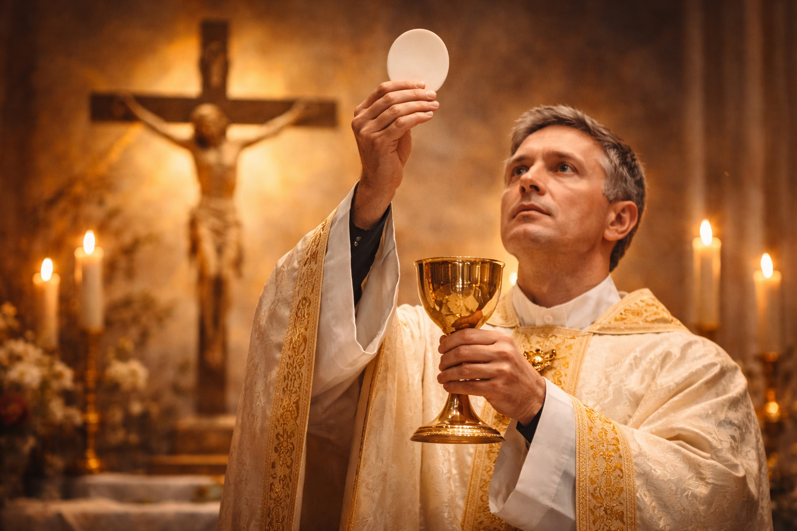

O Significado da Santa Missa: O Sacrifício Incruento de Cristo
A Santa Missa é o ato mais sublime da religião católica. Ela não é apenas uma reunião de fiéis, um culto de louvor ou uma simples lembrança da Última Ceia. A Missa é a renovação sacramental do sacrifício de Jesus no Calvário. No altar, o mesmo Cristo que se ofereceu de uma vez por todas na Cruz, torna-se presente de forma incruenta (sem derramamento de sangue), oferecendo-se ao Pai pela nossa salvação. É o céu que toca a terra em cada celebração.
A Missa como Sacrifício e Banquete
A teologia católica ensina que a Missa possui uma dupla dimensão inseparável: ela é Sacrifício e Banquete. Como sacrifício, ela torna presente a imolação de Cristo; como banquete, ela nos convida a participar do Corpo e Sangue do Senhor, alimentando nossa alma para a vida eterna. Não se pode ter um sem o outro: o banquete nasce do sacrifício.
"Fazei isto em memória de mim." (Lucas 22, 19)
As Quatro Finalidades da Missa
Sempre que participamos da Missa, oferecemos a Deus quatro atos fundamentais, conhecidos pela sigla A.E.P.S.:
- Adoração (Latria): Reconhecemos a soberania absoluta de Deus e Lhe prestamos o culto que só a Ele é devido.
- Eucaristia (Ação de Graças): Agradecemos a Deus por todos os benefícios recebidos, especialmente pela nossa redenção.
- Propiciação (Reparação): Pedimos perdão pelos nossos pecados e oferecemos o sacrifício de Cristo em reparação às ofensas cometidas contra Deus.
- Súplica (Petição): Apresentamos nossas necessidades e as de todo o mundo ao Pai, confiantes na intercessão de Seu Filho.
As Partes da Missa: Uma Jornada Espiritual
A Missa é dividida em duas grandes partes que formam um único ato de culto:
- Liturgia da Palavra: Deus fala ao Seu povo através das leituras bíblicas e da homilia. Nós respondemos com o Salmo e a profissão de fé.
- Liturgia Eucarística: É o momento culminante. Inclui o Ofertório, a Oração Eucarística (onde ocorre a Transubstanciação) e o Rito da Comunhão.
Como Participar Frutuosamente?
Participar da Missa não é apenas "assistir" a um espetáculo. A Igreja nos pede uma participação ativa, consciente e piedosa. Isso significa estar presente de corpo e alma, respondendo às orações, cantando e, acima de tudo, unindo nossos próprios sacrifícios cotidianos ao sacrifício de Cristo no altar. A melhor forma de participar é recebendo a Sagrada Comunhão em estado de graça.
Conclusão: O Centro da Nossa Vida
Sem a Santa Missa, o mundo seria um lugar muito mais escuro. Ela é o sol que ilumina a vida do cristão. Que possamos redescobrir o valor infinito de cada celebração e nunca nos aproximarmos do altar por rotina. Cada Missa é uma oportunidade única de encontrar o Senhor e ser transformado por Sua graça.
Ite, Missa est. Ide, a Missa terminou e a missão começa!